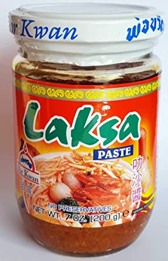
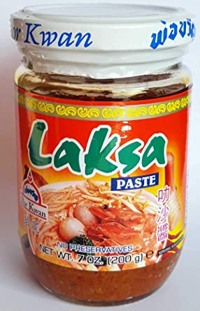

What is Laksa?
Laksa is a Southeast Asian noodle dish in a coconut-based broth. My Laksa recipe is based off of one commonly eaten in Australia, but there are several different variations from around the world. While this dish often requires many ingredients which may be difficult to find in the US, mine uses a paste which has many of the ingredients and flavors associated with laksa!
- Laksa Paste
- Shrimp, 1lb
- Tofu, Firm
- Baby Stem Brocolli
- Garlic, 5 cloves
- Ginger
- Lemongrass, Either Fresh or a Paste
- Chicken Stock
- Coconut Milk
- Fish Sauce
- Brown Sugar
- Red Onion, Diced
- Noodles, I Used Ramen
 

- Heat up a medium sized stock pot with 1 tablespoon of oil
- Sautee the shrimp, making sure not to overcook
- Remove shrimp, and in the same pot add the laksa paste
- After cooking out the laksa paste over medium heat for a few minutes, add ginger, garlic, onion, and lemongrass
- Once all ingredients are cooked together for a few minutes, add in 1 tin of coconut milk
- Add in around 2 cups of chicken stock
- Simmir the ingredients over a medium-low heat, and heat up a separate pan
- In the separate pan, cook firm tofu and baby brocolli along with any other vegetables you would like to add
- In the meantime, cook and drain the ramen noodles according to the package instructions
- Taste the laksa broth for seasoning, adding in fish sauce and brown sugar to taste
- To plate, pour broth over the noodles in a warm bowl and top of vegetables and shrimp